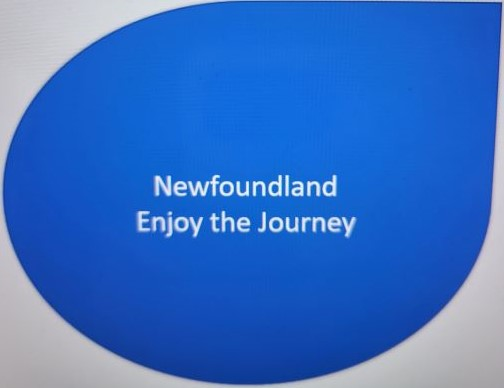

For years, we've built our communities on the tradition
of fishing. Often passed down through the generations, fishing
is more than just a job, it's a way of life. There are many
different fish recipes inspired by the locals, so drop in
to any of our family owned restaurants to try new dishes,
such as our famous seal flipper pie.

Nothing like seeing ice on the ocean! In many areas, it doesn't
get cold enough to have ice on the ocean, but not here in Newfoundland.
You can start seeing pack ice as early as October, and more than once
people have been seen 'trekking' across the ice. Make sure you're dressed
warm and get safety tips for this exciting excursion from any of the locals.

Dotted along our flat coast are all sorts of caves and nooks. It is no
secret that these beautiful features can be found all over the island.
People come from all over the world to take in the beauty of Newfoundland,
and we hope that you will too!

Newfoundland was discovered a few hundred years ago by a man
named John Cabot. It was said that he would dip his nets into
the ocean, and within minutes, it could be pulled up and be brimming
with fish. He called it a bountiful land. Newfies are proud of their
history and the native traditions, such as 'mummering'. Mummering involves
dressing up as to be unrecognizable to go and sing carols at Chritmas time.

Sightseeing is what Newfoundland is all about. It may be a flat island,
but that just makes the ocean views more accessible! We have sight seeing
by foot, or by boat. Make sure that if you choose to do a boat excursion,
you take the time to go whale watching. It is a unique and amazing experience
that has made Newfoundland popular over the years.